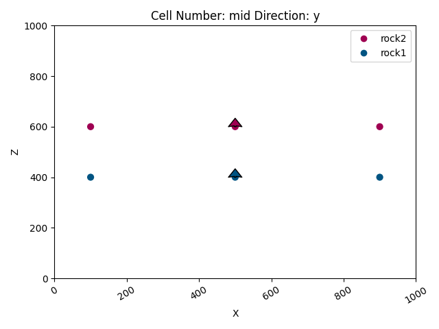
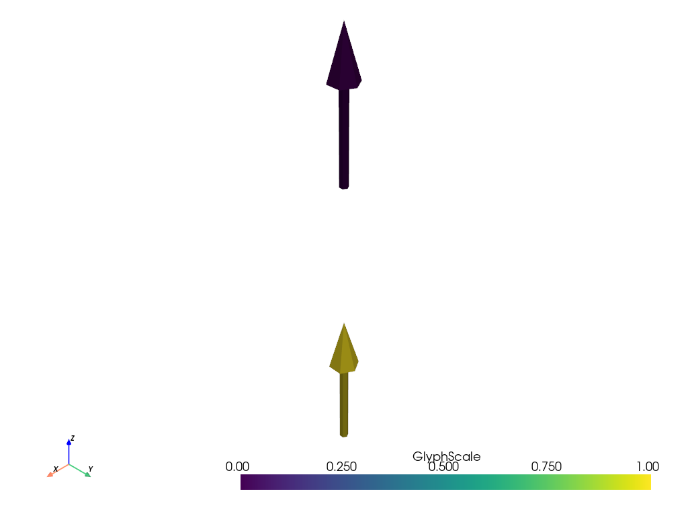

Note
Go to the end to download the full example code.
Model 1 - Horizontal Stratigraphy¶
This example demonstrates how to build a basic geological model with horizontally stacked layers using GemPy, an open-source Python library for implicit geological modeling. In this script, we will:
Set up and compute a simple geological model using input data (orientations and surface points).
Visualize the model in 2D and 3D.
Export model components (formations, orientations, surface points, and the regular grid) to VTK files.
Extract mesh vertices and normals, save them to Excel files, and convert the vertex data to an XYZ file.
Each section includes detailed comments to explain its purpose and functionality.
Import necessary libraries
import gempy as gp
import gempy_viewer as gpv
import pyvista as pv
import vtk
import pandas as pd
# sphinx_gallery_thumbnail_number = 2
Generate the Geological Model¶
In this section, we define the data source and create a GeoModel instance. The model is defined with a specific spatial extent and resolution (refinement). Input data (orientations and surface points) are loaded from a remote repository.
# Define the path to the dataset hosted online
data_path = 'https://raw.githubusercontent.com/cgre-aachen/gempy_data/master/'
# Create a GeoModel instance with the given project name, extent, and refinement level.
data = gp.create_geomodel(
project_name='horizontal',
extent=[0, 1000, 0, 1000, 0, 1000],
refinement=6,
importer_helper=gp.data.ImporterHelper(
path_to_orientations=data_path + "/data/input_data/jan_models/model1_orientations.csv",
path_to_surface_points=data_path + "/data/input_data/jan_models/model1_surface_points.csv"
)
)
# Map a geological series to the corresponding surfaces.
# Here, the "Strat_Series" is associated with two formations ('rock2' and 'rock1'),
# which defines the stacking order of horizontal layers.
gp.map_stack_to_surfaces(
gempy_model=data,
mapping_object={"Strat_Series": ('rock2', 'rock1')}
)
# Compute the geological model using the provided data and mappings.
gp.compute_model(data)
geo_data = data
Surface points hash: 6f1a39ed77e87a4057f03629c946b1876b87e24409cadfe0e1cf7ab1488f69e4
Orientations hash: 04c307ae23f70252fe54144a2fb95ca7d96584a2d497ea539ed32dfd23e7cd5d
Setting Backend To: AvailableBackends.numpy
2D Visualization of the Geological Model¶
The following plots provide 2D views of the model. - The first plot shows the initial model without computed results. - The subsequent plots display the computed geological data in the x and y directions. Note: The boundaries are hidden in the latter plots for a cleaner visualization.
# Plot the initial model in the y direction (without displaying computed results)
gpv.plot_2d(geo_data, direction=['y'], show_results=False)
# Plot the computed model results in the x and y directions, including data but excluding boundaries
gpv.plot_2d(geo_data, direction=['x'], show_data=True, show_boundaries=False)
gpv.plot_2d(geo_data, direction=['y'], show_data=True, show_boundaries=False)
- 

<gempy_viewer.modules.plot_2d.visualization_2d.Plot2D object at 0x7ff2a29f3490>
3D Visualization and Export to VTK¶
Visualize the model in 3D with data, results, and boundaries. The generated 3D plot is also used to export various components of the model to VTK files.
p = gpv.plot_3d(geo_data, show_data=True, show_results=True, show_boundaries=True, image=True)
# Export different components of the model to VTK files:
p.surface_poly['rock1'].save('rock1.vtk') # Save formation 'rock1'
p.surface_poly['rock2'].save('rock2.vtk') # Save formation 'rock2'
p.orientations_mesh.save('orientations.vtk') # Save the orientations mesh
p.surface_points_mesh.save('surface_points.vtk') # Save the surface points mesh
# Retrieve and export the regular grid (volume representation) of the model
box = p.regular_grid_actor.GetMapper().GetInput()
box.save('box.vtk')

Display the Exported VTK Files with PyVista¶
Load and plot each exported VTK file to verify the export.
pv.read('rock1.vtk').plot(show_edges=False)
pv.read('rock2.vtk').plot(show_edges=False)
pv.read('orientations.vtk').plot(show_edges=False)
pv.read('surface_points.vtk').plot(show_edges=False)
pv.read('box.vtk').plot(show_edges=False)

- 
Extract and Save Mesh Vertices and Normals¶
The following functions extract vertex coordinates and corresponding normal vectors from a mesh (vtkPolyData), and then save this data into Excel files for further analysis.
def generate_normals(polydata):
"""
Generate normals for the given polydata if they are not already computed.
Parameters:
polydata (vtk.vtkPolyData): Input polydata for which normals are to be computed.
Returns:
vtk.vtkPolyData: The polydata with computed point normals.
"""
normal_generator = vtk.vtkPolyDataNormals()
normal_generator.SetInputData(polydata)
normal_generator.ComputePointNormalsOn()
normal_generator.ComputeCellNormalsOff()
normal_generator.Update()
return normal_generator.GetOutput()
def get_vertices_and_normals(mesh):
"""
Extract vertices and normals from a mesh.
Parameters:
mesh: The mesh object (typically from a formation) to extract surface vertices and normals.
Returns:
tuple: Two lists containing vertices and normals respectively.
"""
# Extract the surface of the mesh
surface_mesh = mesh.extract_surface()
polydata = surface_mesh
# Ensure normals are computed for the polydata
polydata_with_normals = generate_normals(polydata)
# Extract points (vertices)
points = polydata_with_normals.GetPoints()
vertices = [points.GetPoint(i) for i in range(points.GetNumberOfPoints())]
# Extract normals associated with the points
normals_array = polydata_with_normals.GetPointData().GetNormals()
normals = [normals_array.GetTuple(i) for i in range(normals_array.GetNumberOfTuples())]
return vertices, normals
def save_to_excel(vertices, normals, vertices_file, normals_file):
"""
Save the vertices and normals to separate Excel files.
Parameters:
vertices (list): List of vertex coordinates.
normals (list): List of normal vectors.
vertices_file (str): File name for saving vertices.
normals_file (str): File name for saving normals.
"""
# Create DataFrames from the lists
vertices_df = pd.DataFrame(vertices, columns=['X', 'Y', 'Z'])
normals_df = pd.DataFrame(normals, columns=['x', 'y', 'z'])
# Write the DataFrames to Excel files
vertices_df.to_excel(vertices_file, index=False)
normals_df.to_excel(normals_file, index=False)
# Extract vertices and normals from the mesh of formation 'rock1'
mesh = p.surface_poly['rock1']
vertices, normals = get_vertices_and_normals(mesh)
# Create DataFrames for later processing or verification
vertices_df = pd.DataFrame(vertices, columns=['X', 'Y', 'Z'])
normals_df = pd.DataFrame(normals, columns=['x', 'y', 'z'])
# Define file names for the Excel outputs
vertices_file = "rock1_vertices.xlsx"
normals_file = "rock1_norms.xlsx"
# Save the extracted data to Excel files
save_to_excel(vertices, normals, vertices_file, normals_file)
# Optionally, read back the Excel files to verify their content
pd.read_excel(vertices_file)
pd.read_excel(normals_file)
Convert Vertices DataFrame to an XYZ File¶
This function converts a DataFrame containing vertex coordinates to an XYZ format file, which is a simple text file with one point per line.
def dataframe_to_xyz(df, filename):
"""
Write vertex coordinates from a DataFrame to an XYZ file.
Parameters:
df (pandas.DataFrame): DataFrame containing 'X', 'Y', and 'Z' columns.
filename (str): Output filename for the XYZ file.
"""
with open(filename, 'w') as f:
for index, row in df.iterrows():
f.write(f"{row['X']} {row['Y']} {row['Z']}\n")
# Specify the output file name for the XYZ file
filename = "output.xyz"
# Convert the vertices DataFrame to an XYZ file
dataframe_to_xyz(vertices_df, filename)
Total running time of the script: (0 minutes 3.425 seconds)